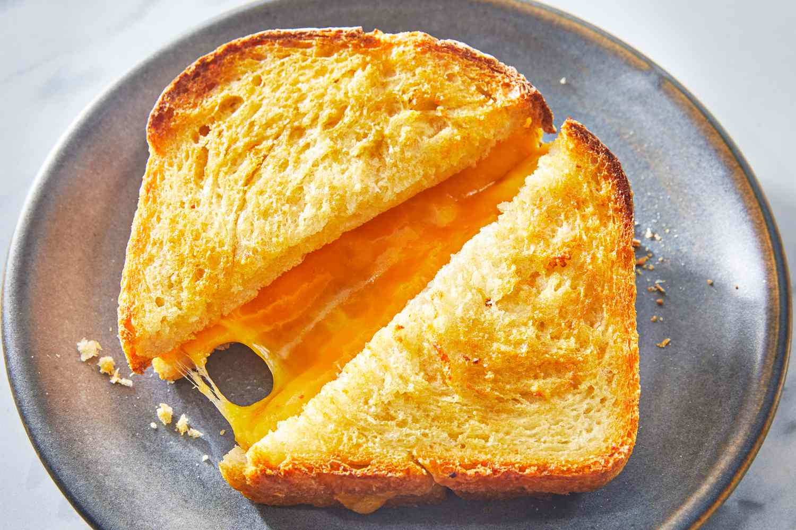

Grilled Cheese

Where does grilled cheese come from?
Grilled cheese is an american made food that originated from fat people in the 90s getting bored
being healthy. Thanks to there creative obesity, we have a simple yet delicious sandwhich for nearly
anyone to enjoy!
Indgredients
For grilled cheese your going to need...
- American Cheese
- Any bread (perferably buttery and fat)
- Butter
- A pan
- A stove or fire
Steps to make it
- Put your cheese of choice inbetween the slices of bread
- Get a square of buter and spread it on both slices of your bread
- Put more butter (yes your cholesterol is that bad) on your pan of choice and heat it up
- Once your butter is melted put your sanwhich on the pan for 2 minutes then flip sides and repeat for another 2
- Once you see both sides about meduim toasted, take it off the pan and enjoy!